A brand that is already winning.
That's what makes this hard. Zara doesn't need rescuing. It needs a reason to stay unbeatable for the next decade.
Inditex's financial year runs 1 February 2025 to 31 January 2026.
Pressure from both ends of the rail.
Tap each price tag to turn it over.
The brand, read like a care label.
Every garment tells you what it's made of and how to look after it. So does every brand. Tap a care symbol to read the audit.
- Unmatched speed and supply-chain control
- Prime stores as media
- Growing designer credibility
- "Fast fashion" label sticks
- Uneven quality perception
- Rational, less emotional brand story
- Luxury's lost shoppers
- Resale and repair
- Regulation that hurts ultra-fast rivals more
- Ultra-fast fashion on price
- Sustainability scrutiny
- Collabs that feel like costume
ZARA · BRAND LABEL
COMPOSITION
CARE INSTRUCTIONS
Ultra-fast fashion wins the first wear. Zara can own every wear after.
On resale platforms like Vinted, preloved Zara pieces have sold for more than Shein's brand-new items.
That's a quiet superpower. People already treat Zara as something that keeps its value. Zara just never says so. The brand talks about newness, when its real edge over ultra-fast rivals is how long its clothes stay wanted.
Illustrative, based on the resale signal above.
Still Zara.
Fast to make. Slow to leave. Zara keeps its speed, but changes what speed is for: getting the right pieces made in the right amounts, and proving they last.
Five looks. One strategy.
Try the strategy on.
Pick a customer. See how the strategy dresses them: the message, the product, the channel and the proof.
Choose a customer to open the curtain.
The maths Zara should be teaching.
"Still Zara" moves the conversation from price tag to cost per wear. Try it: the cheaper piece isn't always the cheaper choice.
The cheap top
The piece you keep
Prices are illustrative examples, not Zara's actual prices.
How we'd know it fits.
| Measure | What it tells us | Target, 12 months |
|---|---|---|
| Quality perception | Share of shoppers who rate Zara "good quality for the price" | +8 points |
| Resale engagement | Pre-Owned listings and repairs per 1,000 customers | 3× baseline |
| Designer halo | Full-price sell-through of mainline pieces during collab launches | Above non-launch weeks |
| Digital label scans | Customers scanning the care-label passport | 1 in 5 buyers |
| Brand warmth | "Zara is a brand I feel good about" | +6 points |
| Business | Sales growth held above the market, gross margin stable | Maintained |
Targets are proposals for a portfolio project, to be set against Zara's internal baselines.
The season plan
- "Still Zara" rides the Galliano debut
- Store windows: one piece, five years of wear
- Digital care-label passport pilot on outerwear
- Repair counters in 50 flagships
- Pre-Owned pick-up in 500 stores
- Resale credit toward new pieces
- First "Still Zara" report: pieces resold, repaired, kept
- Scale what worked
Risks
| "Greenwashing" backlash | Lead with measurable proof (repairs, resales, fibre data), never with vague eco claims. |
| Collabs feel like costume | Tie every designer drop to quality and longevity, not just hype. |
| Slower sales from keeping clothes longer | Resale credit and repair bring customers back into stores more often. |
| Quality claims that don't hold up | Launch the passport on the strongest categories first, such as coats and tailoring. |
- Oui Speak Fashion, "Inditex reports record FY2025 results", March 2026. Link
- The Retail Bulletin, "Zara owner posts rise in full year sales and profit", March 2026. Link
- Retail Insight Network via Yahoo Finance, "Zara owner Inditex reports profit growth in FY25". Link
- Inditex, FY2025 results, 1 February 2025 to 31 January 2026. Link
- Howard Yu, Inc., "How Zara fought off Shein and outmaneuvered the ultra-fast fashion tide", December 2025. Link
- Reuters via Yahoo News, "Shein plans first permanent stores in France, sparking backlash". Link
- Gentlemen Design, "Zara no longer wants to sell you cheap clothes", June 2026. Link
- Hypebae, "Should luxury and fast fashion collaborations exist?", April 2026. Link
- GU Consultancy, "Zara is not selling luxury", July 2026. Link
- Young Urban Project, "Zara case study 2026", June 2026. Link
- NIQ, "Shein, Zara, H&M: close-up on the ultra-fast fashion market", 2023. Link
The campaign, made.
Four kinds of assets I designed for this strategy: an Instagram carousel, Stories, widescreen pieces and a print piece. Scroll each row, or open the originals in Canva.
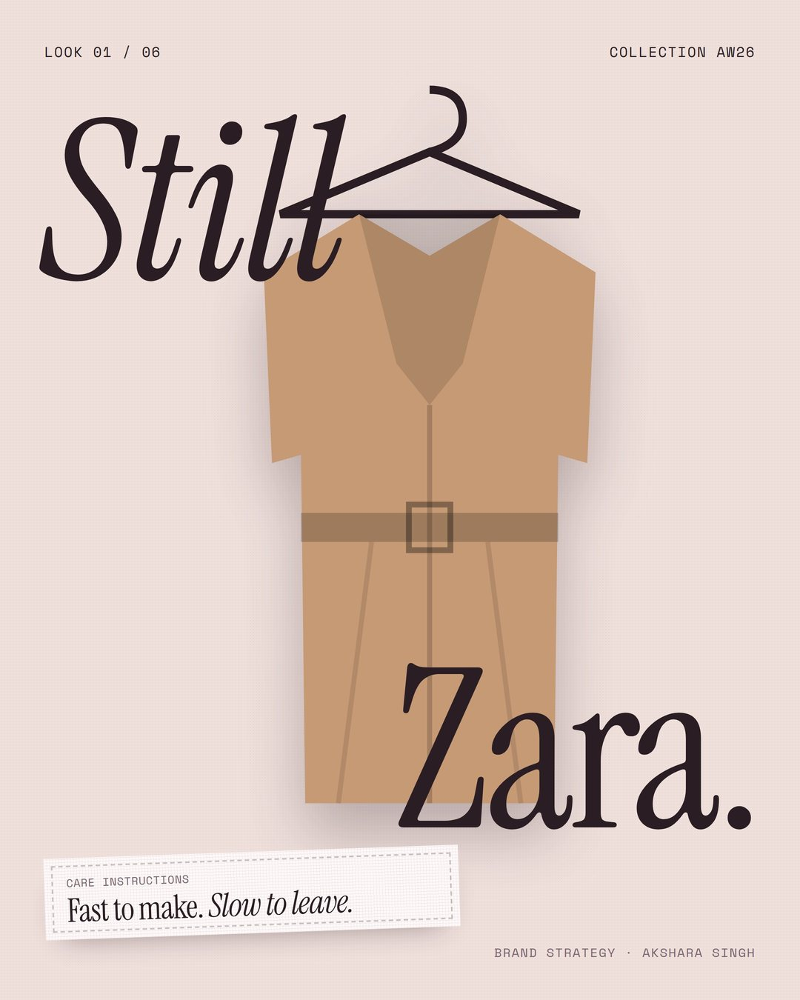
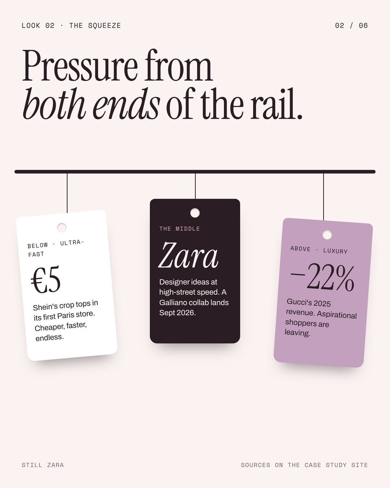
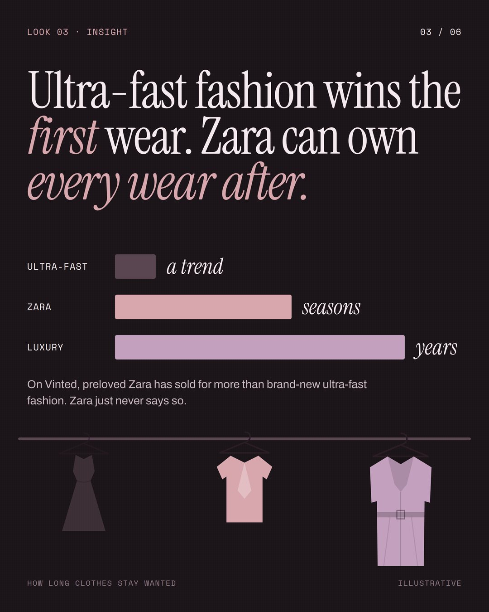
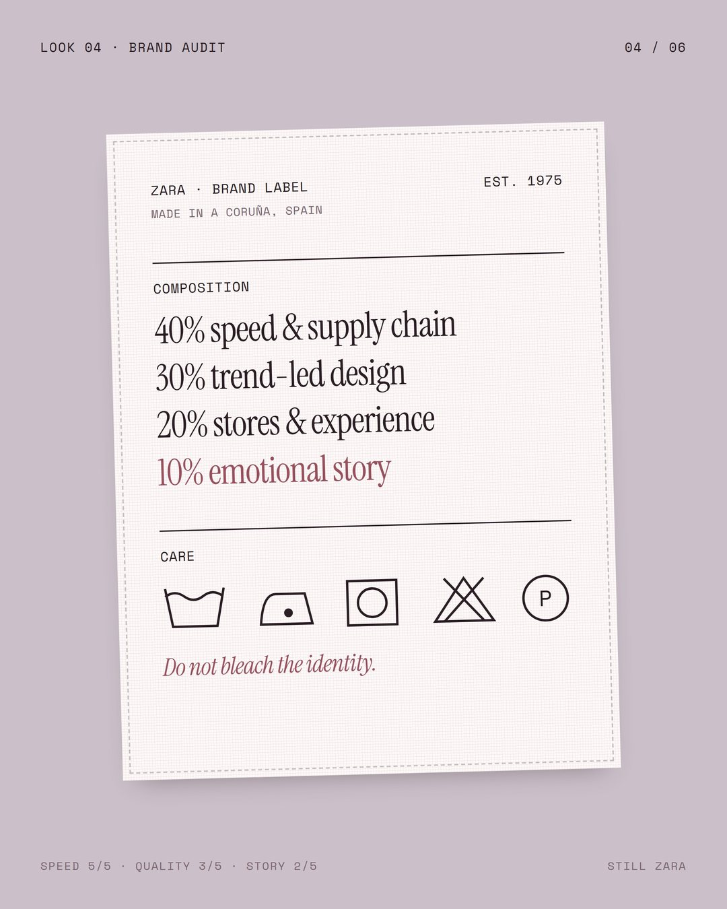
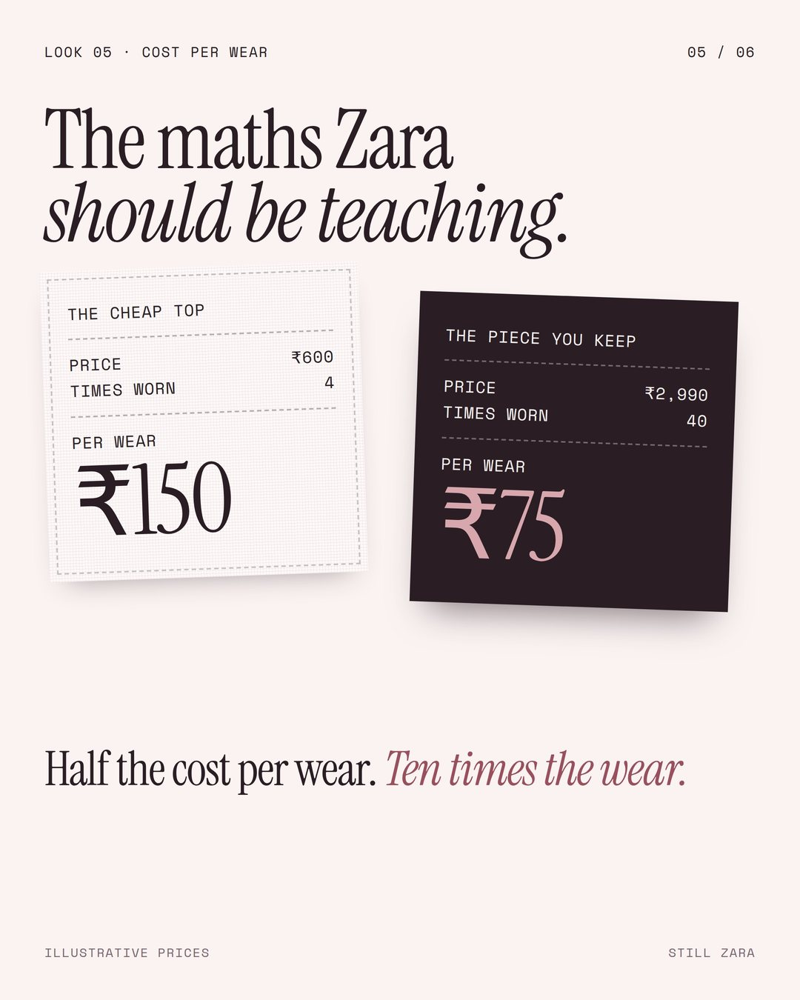
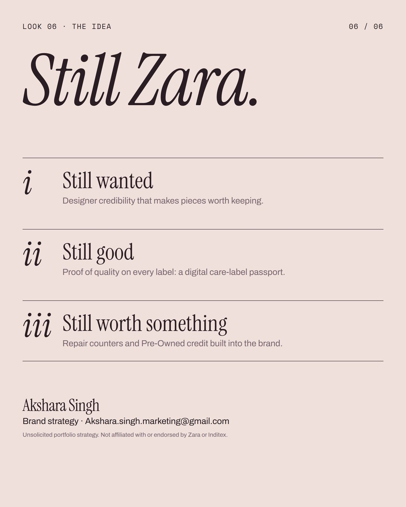
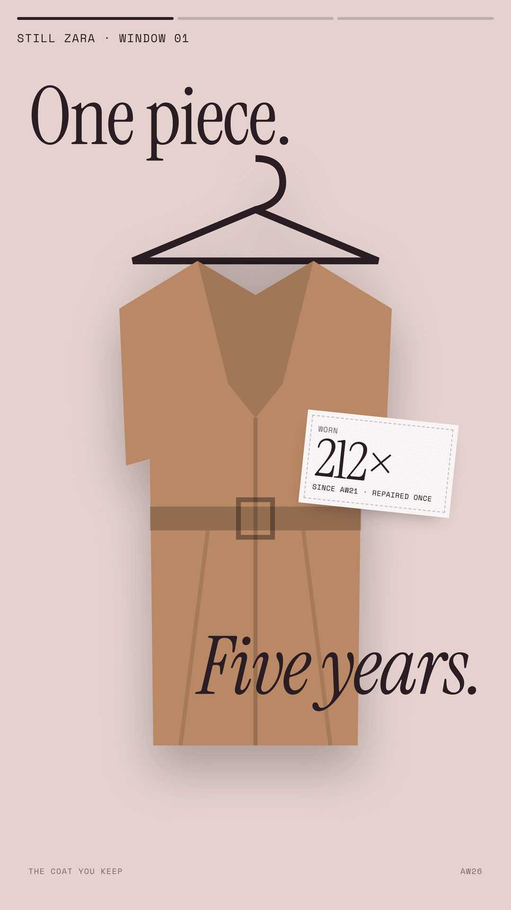
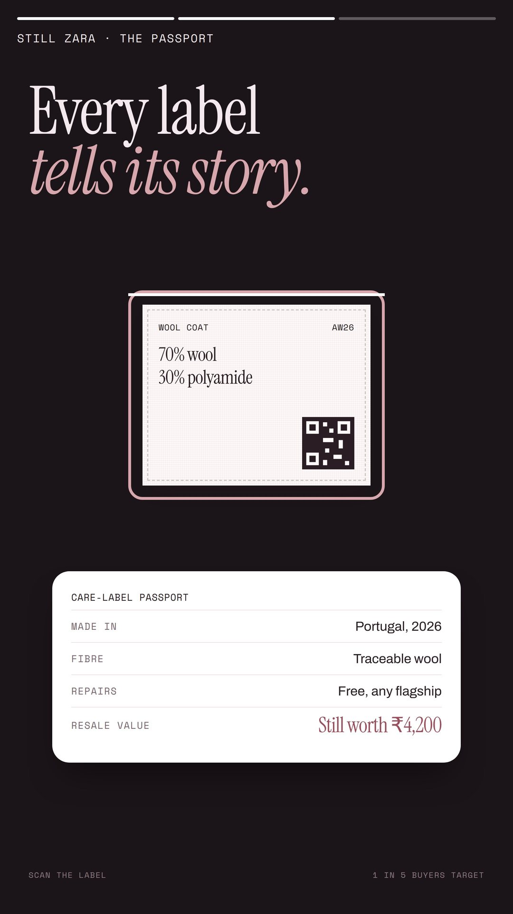
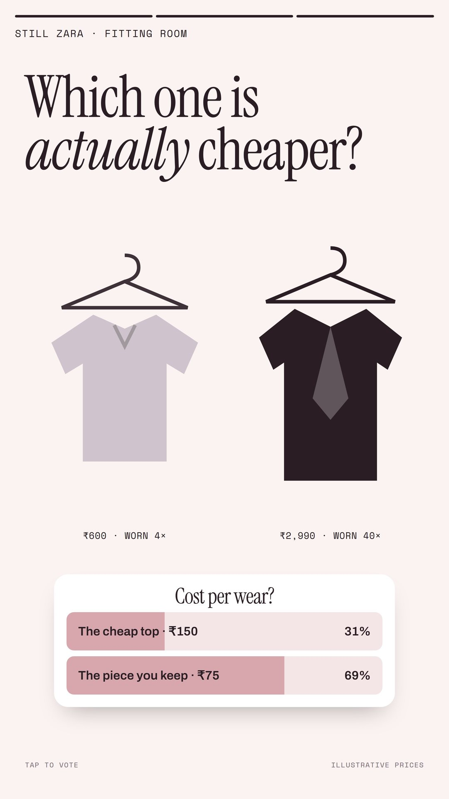
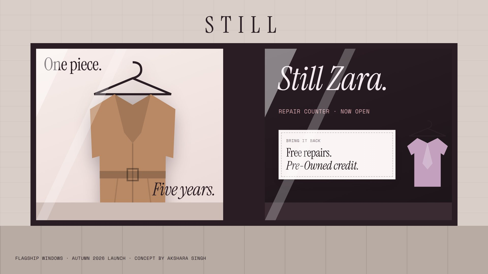
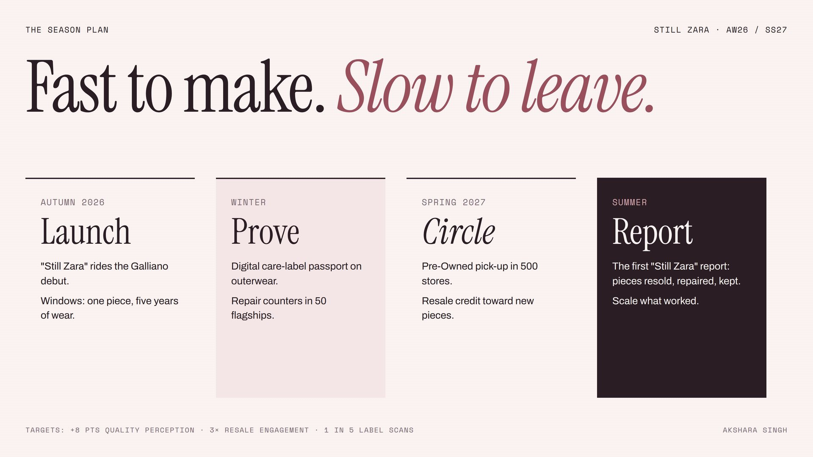
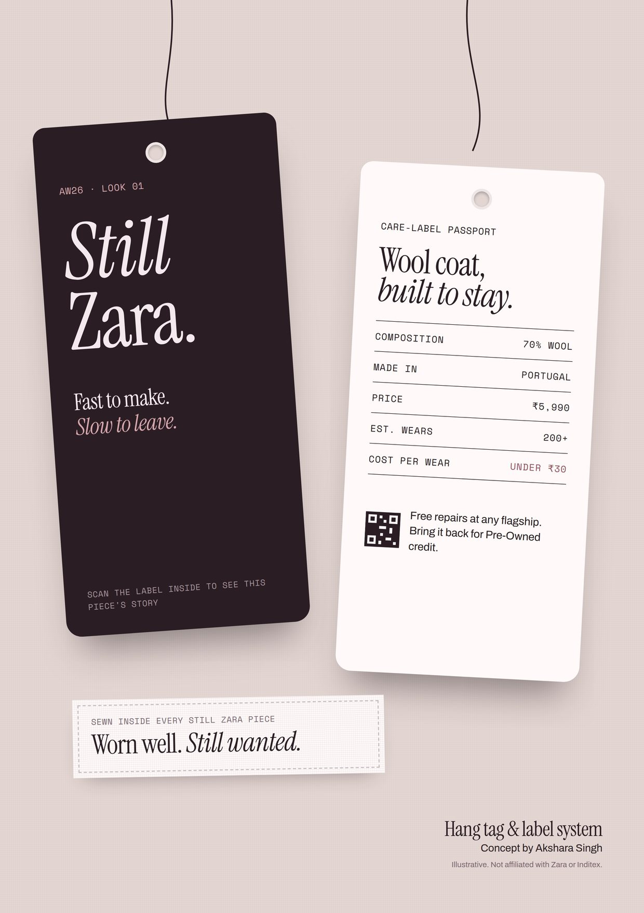